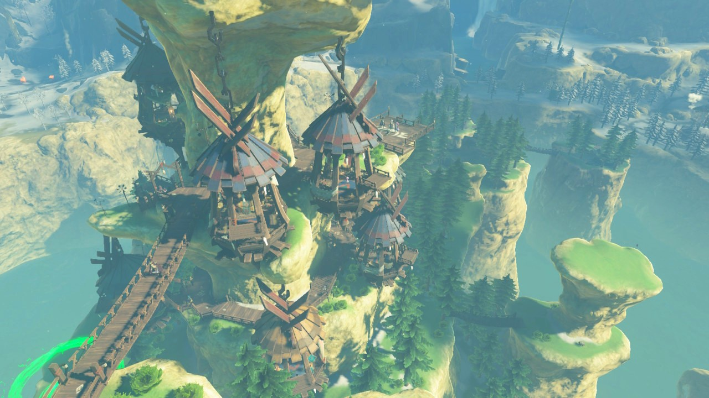
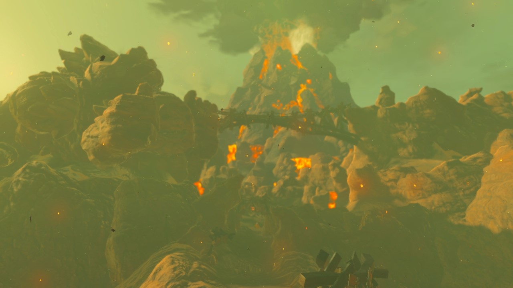
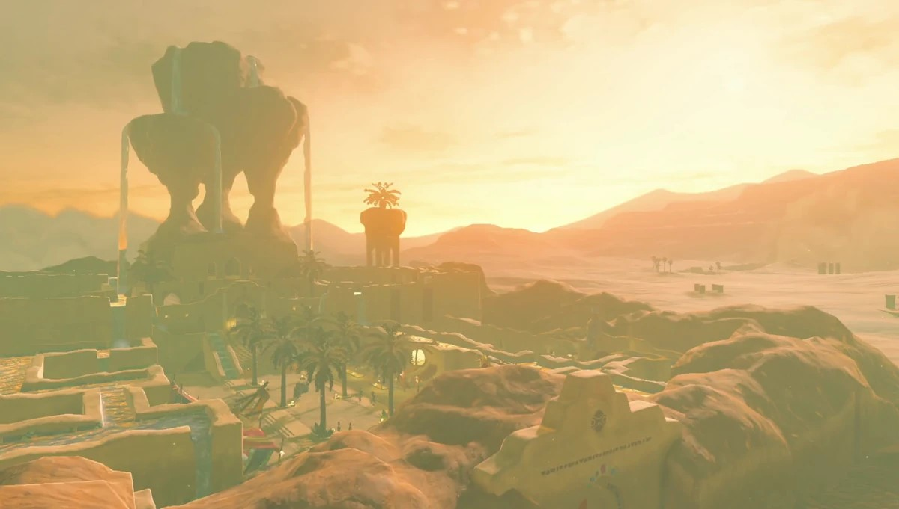

Rito Village

Rito Village is a settlement located on an island at the center of Lake Totori on the Tabantha Frontier. The Village was built around a giant stone pillar, with a vertical construction that is suited to the Rito's ability to fly. A small grove of Cedar Trees can be found below the Village proper. Several bridges also connect Rito Village to Rito Stable nearby. Kaneli, who is knowledgeable about the history of the Champions, is the current chieftain. Due to the isolation imposed on Hebra by the Tanagar Canyon, very few travelers visit Rito Village.
Goron City
Goron City is located west of Death Mountain in Eldin Canyon, denoted by the fifth Death Mountain Marker. It consists of a series of rocky buildings, with several bridges providing safe passage over a pool of Lava below the City. The Goron Stone Memorial, which depicts several famous Gorons overlooks Goron City.Goron City's Goddess Statue can be found outside of the Boss's House. The Mountain Road cuts through the City before continuing on to the Abandoned North Mine. The path curves around the Goron Stone Memorial and across Stolock Bridge, which is situated above Goron City.
Zora Domain
In Breath of the Wild, Zora's Domain is located in the Lanayru Region and is the home of the Zora. Travelers entering the area by foot cross the Great Zora Bridge over Ruto Lake and are greeted with a view of a large stone fish surmounting the Domain, which represents Lord Jabu-Jabu. Unlike other towns in the game, Zora's Domain consists of a single extensive structure instead of separate buildings. Its design include a number of curving bridges and open spaces, which are often bounded by colonnades instead of walls.

The Domain's structure includes large quantities of Luminous Stone, which causes several portions of it to glow softly during the night. These structures are maintained by two Zora artisans, Fronk and Ledo, apprenticed under Dento. Upkeep of the Domain requires the use of large quantities of Luminous Stone.
Gerudo Town

If Link tries to enter Gerudo Palace, the guards will not let him. Link must find an opening well and jump into it to get into the palace. This action allows Link to enter Gerudo Town by disguising himself as a woman while wearing the Gerudo Outfit. Once inside, Link can meet with Riju, chief of the Gerudo, in the Royal Palace to begin the Main Quest.
If Link tries to enter Gerudo Palace, the guards will not let him. Link must find an opening well and jump into it to get into the palace. This action allows Link to enter Gerudo Town by disguising himself as a woman while wearing the Gerudo Outfit. Once inside, Link can meet with Riju, chief of the Gerudo, in the Royal Palace to begin the Main Quest.